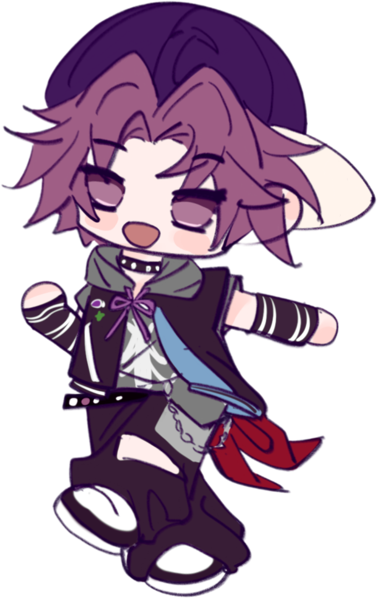
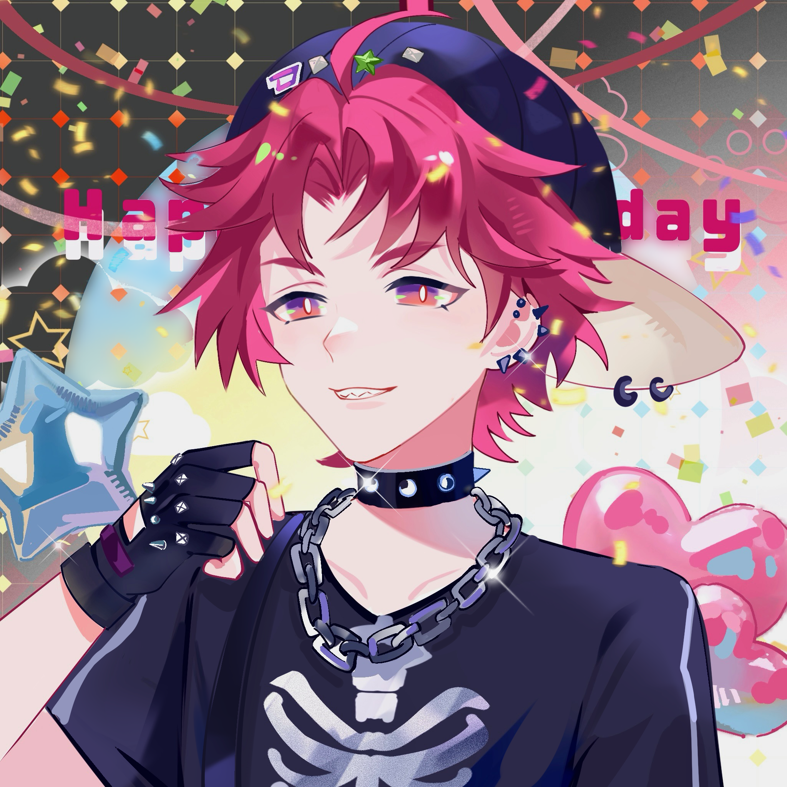
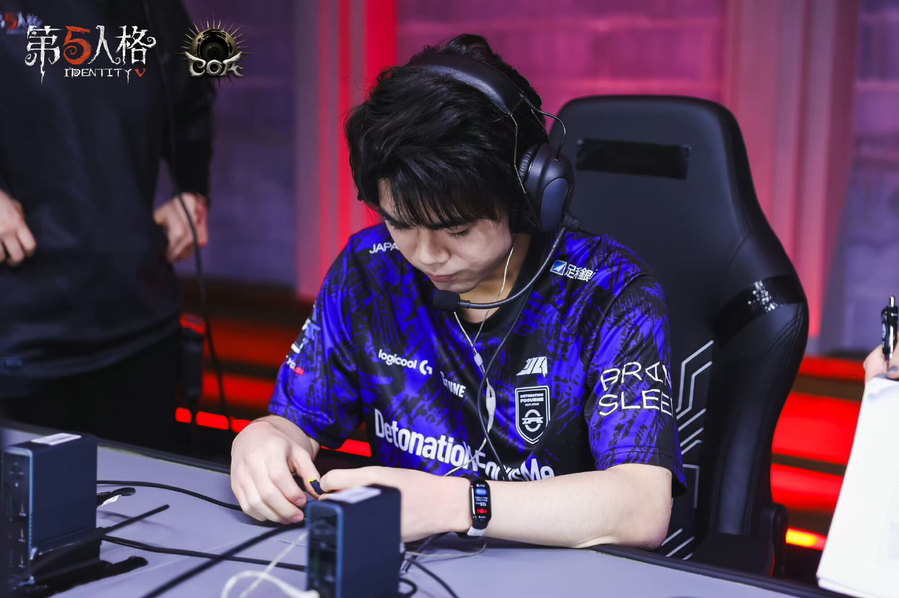
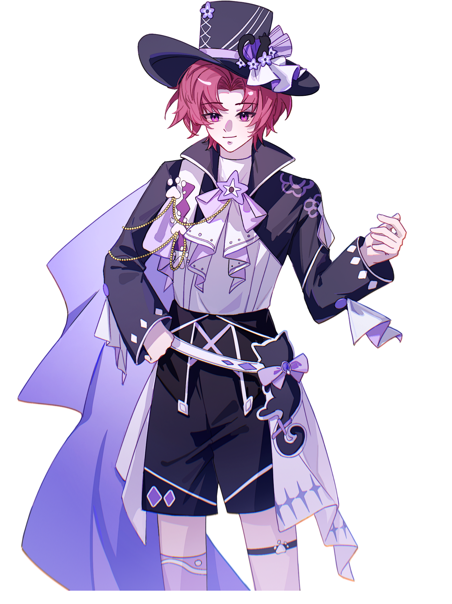
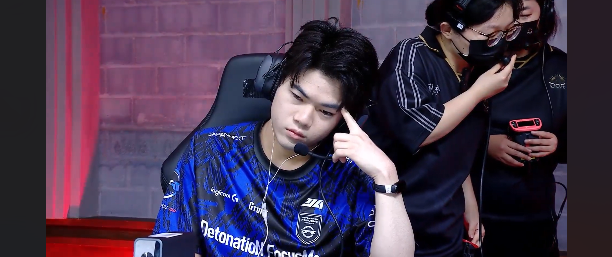
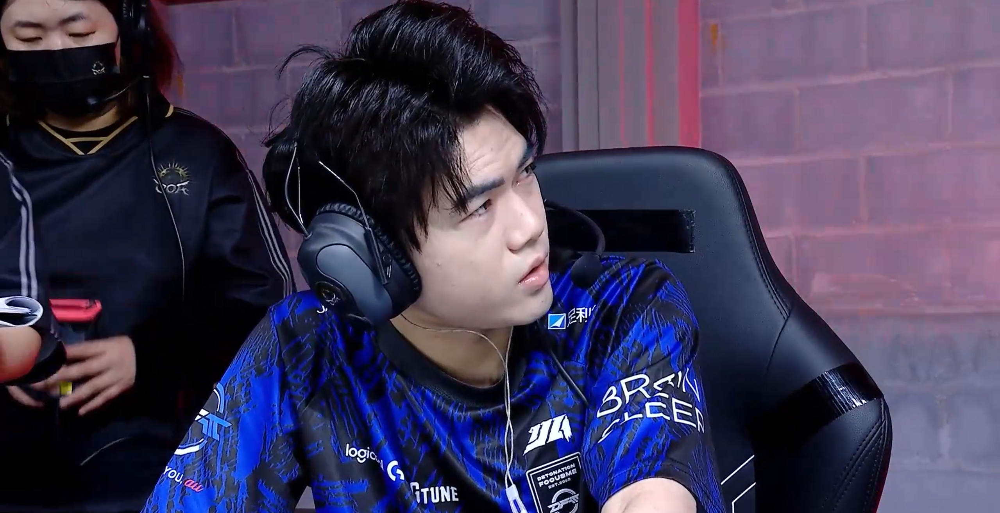
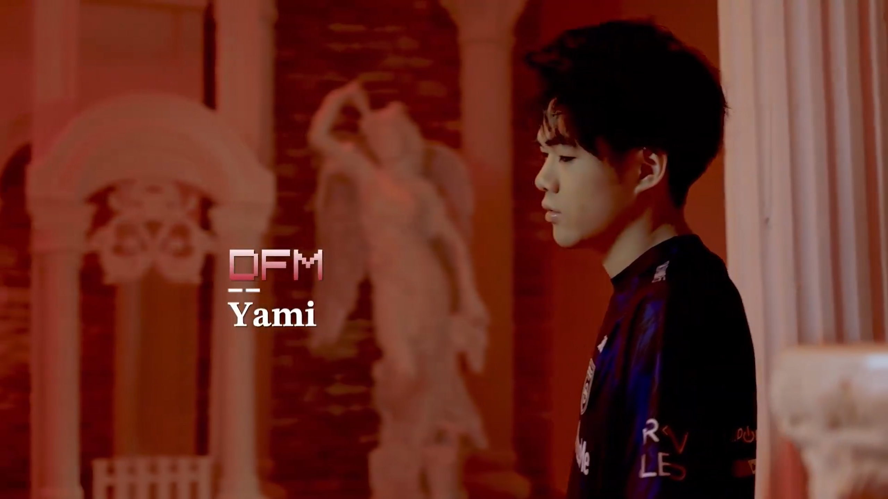
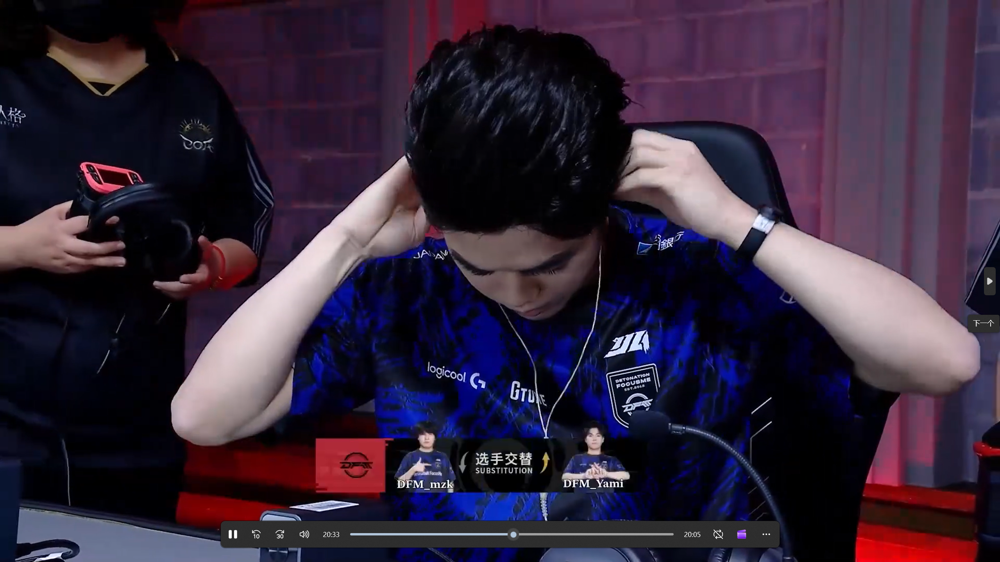

Identity V Japan League · DetonatioN FocusMe
监管者选手 · 预判如刀，快人一步 💣
"永远快人一步的预判与倒推式打法——让对手觉得，自己的想法早已被看穿。"


監管者 / Hunter
DetonatioN FocusMe
🔥 Yami 是 IJL 赛场上最容易"燃起来"的选手之一——备战间里情绪最外放、喜怒形于色，也因此极具人格魅力，圈粉无数。
🧠 他的比赛风格以"倒推式打法"著称：洞悉求生者的思维，用惊人的预判在博弈中永远快人一步。

职业生涯起点，以 L3_yami 的 ID 踏入日本赛区职业舞台。
随队出征深渊的呼唤Ⅳ日本赛区预选赛，闯入八强。
2023 日本 IVT 冬季赛斩获季军；深渊的呼唤Ⅶ日本赛区线上预选赛六强。同期由 iPad 转为手机操作。
生涯高光期：2024 IJL 夏季赛常规赛第三名、秋季赛常规赛第一名，两次总决赛均获第四名。
2025年5月 FAV 被 DFM 收购后随队加盟。代表 DFM 出征深渊的呼唤Ⅸ世界赛（日本预选赛三强、世界赛20强），并征战 IJL 2025 / 2026 赛季。
| 赛事 | 战队 | 成绩 |
|---|---|---|
| 2026 IJL 夏季赛常规赛 | DFM | 第七名 |
| 2025 IJL 秋季赛常规赛 | DFM | 第七名 |
| 2025 IJL 夏季赛总决赛 | DFM | 第六名 |
| 2025 IJL 夏季赛常规赛 | DFM | 第五名 |
| 2024 IJL 秋季赛总决赛 | FAV | 第四名 |
| 2024 IJL 秋季赛常规赛 | FAV | 第一名 |
| 2024 IJL 夏季赛总决赛 | FAV | 第四名 |
| 2024 IJL 夏季赛常规赛 | FAV | 第三名 |





FOLLOW 关注他
想第一时间看到 Yami 的动态与直播？欢迎关注他的社交平台：
微博 @DFM_Yami83
他会不定期在微博分享日常、比赛感想与粉丝互动，中国粉丝的聚集地。
✖️X @Yami0hit0
日常碎碎念与赛程动态，粉丝应援创作请带上 #やみゅーじあむ。
▶️YouTube 直播
直播平台为 YouTube，比赛之外也能看到他的排位与整活时刻。